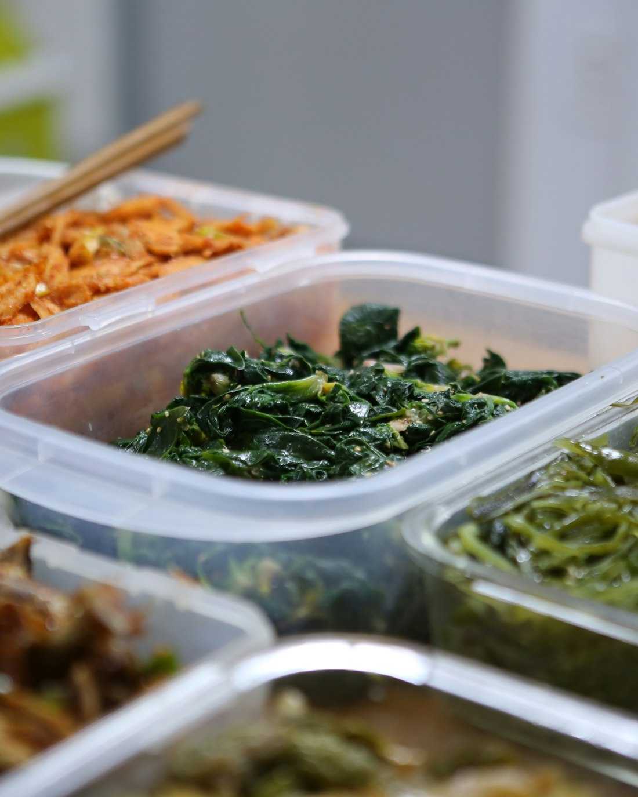
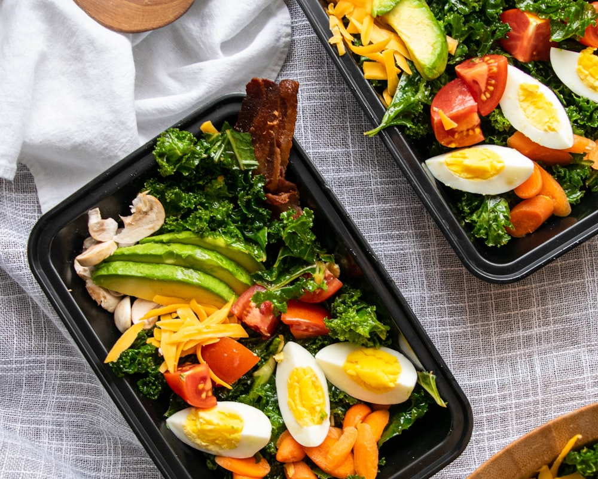
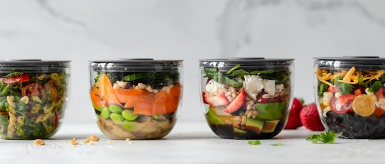

Homemade & healthy meals, cooked with love

Stop spending precious hours meal planning, grocery shopping, and cleaning up the kitchen. With our lovingly prepared, gourmet meals delivered right to your door, you just chill, heat, and enjoy food that tastes like it came from grandma’s kitchen – giving you back time for what matters most.
40+ Years Of Meal Prep Experience
Preparing 30,000+ Meals/Year
3 Generations Of Family Recipes
… let me help you do the shopping, cooking & clean up. Because doing the chores, planning meals, cooking and cleaning up the kitchen is a lot. Especially as a mom who is running the whole show at home, getting the kids to sports and taking care of herself and her family all at once.
My name is Colleen and I would love to prepare fresh, healthy & homemade food for you and your family… so that you have less stress in your day to day and more time for the truly nourishing things in life – your family, your hobbies and yourself!
"Colleen’s food is filled with love and flavor. Colleen creates amazing food each week that fits so many different ppls needs and budgets! I have been using her service for 3 years and have always been pleased with the serving size, menu variety, and professionalism. Thank you, Colleen Ps- her pasta sauce is 10/10 🤌"
“Colleen’s food is absolutely fabulous! We have 4 very young kids and she provides delicious meals for me and my husband to eat - so we don’t resort to cereal or take out! Very very thankful for her service.”
“Homemade By Colleen - What can I say besides the fact that it is simply the best ! It feels like receiving a homemade meal from a family member who truly cares about your well-being.The convenience of having such high-quality, homemade food delivered to my door has been a game-changer. It’s perfect for busy days when I want to eat healthily without compromising on taste or quality."
“Homemade by Colleen is exactly what I was looking for! I travel regularly for work, which makes (healthy) homemade meals a challenge when I don’t have the time to shop and prepare. Everything I’ve tasted from Colleen is delicious, and the delivery option saves me even more time! Thank you for sharing your culinary gift with us!"
"We have been ordering meals by Colleen for over a year now. It has been such a help to our family, our health and our budget. I can't recommend them enough. The food quality and portions are excellent. Some of the menu items, such as the chicken gyros and baked rigatoni have become family favorites. Ray, the driver, is always a delight!"
I have been a mom for the better part of my life. And if I have learned one thing, it’s that family life is unpredictable! Some weeks are packed, others are relaxed. At Homemade by Colleen, we understand that your meal needs change just like your schedule. That’s why we offer on-demand ordering, putting you in control.
Get delicious, homemade meals only when you want them – choose the meals your family craves each week, adjust quantities, or skip a week with zero hassle or surprise charges. We believe in the freedom to nourish your family on your terms, without the pressure of a subscription.
We make it simple, so your family’s always happy and well-fed.

We don't compromise on the ingredients of our prepared meals. Unlike most meal prep services, we source our ingredients as local and fresh as possible - instead of receiving them from big box companies like Sysco.
Moms' food has something special to it. She cooks her food with love to nourish her children’s bodies and souls. Colleen has been a mom to many for over 40 years. Not only to her children, but to many families in Pittsburgh.
Every week the same? That's not fun! Our fresh weekly menu of prepared meals is changing with the seasons to satisfy the cravings of your soul. Nourishing and healthy food for you and your family.
Healthy meals don't have to taste bland. We believe that every meal can be healthy and exciting to the pallet. We combine traditional recipes with healthy foods to create meals that your family loves.

Homemade food that nourishes body, mind and soul lives within my DNA. From a young age my mother, grandmother & grandfather taught me how to cook & bake for the people that I love. Today I am cooking for over 500 families in Pittsburgh and have never felt that purposeful and fulfilled in my life. Every day of the week I am showing up for my family of customers, cooking with love and dedication.
I am not a big business that has an industrial kitchen and orders their supplies from big box food supply companies like Sysco. My team and I source our ingredients as fresh and locally as possible, ensuring we deliver premium quality for the best price. After serving my customers for over 8 years, I understand what kind of a difference my homemade food meal prep service makes in Pittsburgh. From stressed Moms, over to busy singles and retirees that love good food – my meals change lives.
If you’re curious what they say about the healthy, fresh & homemade food that we are delivering each week to their doorstep, check out their testimonials and stories.
For a limited time only
Terms & Conditions Apply. Call 866-941-4129 For More Details.
Homemade by Colleen is a family-owned meal prep and delivery business based in Mt. Lebanon, Pittsburgh, PA. Colleen and her family run every part of the business personally.
Yes. We are based at 300 Mt Lebanon Blvd, Pittsburgh PA 15234 and proudly serve families across the South Hills of Pittsburgh.
We have been making and delivering fresh homemade meals to Pittsburgh families for years, building a reputation for quality, care, and consistency.
With Homemade by Colleen you get real homemade food made by a local family — not a factory. Every meal is made fresh with ingredients you can trust, by people who care about your family as much as their own.
Yes — Homemade by Colleen has hundreds of five-star reviews from happy customers across the South Hills of Pittsburgh.
We deliver prepared meals in the South Hills of Pittsburgh, PA
Note: Homemade by Colleen is constantly adding new delivery areas. Check if we deliver to your ZIP code yet.
Check your ZIP code